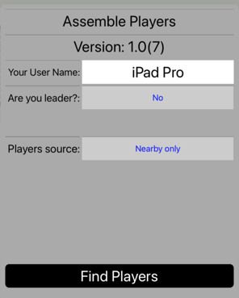

Help is organized as follows.
AnyCards provides a virtual table-top that is shared across devices. It also provides a virtual deck of cards which can be of a number of different sizes (but always made up of standard cards with or without jokers). It allows you to move and turn over cards, make boxes to hold stacks of cards, and do routine moves like dealing or taking up a hand.
The players use their separate devices to play a card game with the cards. Each player may optionally have a private hand. The game provides for an orderly succession of turns but does not otherwise build in the rules of any particular card game. It will support the playing of a wide variety of games that are played entirely with cards.
Achieving agreement about what game to play, enforcing its rules, or incorporating interactions such as bidding, may require voice or message contact between players (not provided by the game).
AnyCards does not provide any "social" features. Rather, players need to arrange in advance to play together. These instructions assume you have already identified the players who will play together and now want to connect them to each other. Each such player must have installed AnyCards on a device.
After installing and starting the game, touch the Players button to bring up a dialog that looks like the picture. 
The first time you do this, Your User Name will be whatever name you gave to your device (usually not too meaningful to others). Touch the white text box to bring up the keyboard and replace the name with a name that you want to be known by when playing. Players who will play together should choose distinct names.
Exactly one player in the group of players must be the leader. That player will actually set up the game (deal out the cards, do whatever else is required). The leader also sets the number of players that are expected. Touch the blue text to the right of the Are you leader? label to toggle back and forth between being the leader and not. Notice that the Number of players stepper appears and disappears accordingly, as does the Game Setup button at the top of the app window (not shown in the picture).
Decide who in your group will be the leader. That player should select Yes and the others should select No. The player who is leader should then set the number of players.
There are two ways for players to connect to each other (the Player source), called Nearby only and Entire internet. One of these modes is shown in blue. Touching the blue text toggles between the two modes. All players must select the same mode.
In the Nearby only mode, players must be near each other (within bluetooth range or on the same wifi hub). All such players are assumed to be playing with each other. Once all players have set the Nearby only mode, and a single player has assumed the leader role and set the number of players, all players may then touch the Find Players button to move on to actual play.
When you switch to Entire Internet mode, the players can be anywhere, as long as they each have an internet connection active on their device. Some additional fields and buttons will appear. At least the Token field must be filled in. Every player must fill in the same value. Once this is true, all players can touch Find Players and move on to actual play.
You will also have an opportunity to enter your own nickname for the token. This text is not transmitted and other players don't have to choose the same nickname or any nickname at all. This optional field is provided to aid the process of remembering and retrieving tokens.
Since it takes some effort for a group to come up with a token and for all players to enter it, AnyCards provides the ability to remember tokens (and their associated nicknames).

To familiarize yourself with how to move cards and use boxes, it is helpful to go to the Players dialog, set yourself as leader, and set the number of players to 1 ("solitaire mode"). Then you can experiment with the features discussed here.
The illustration shows examples of cards (three face up and one face down) as well as one box. The box has been given the name "Deck" and contains 48 cards. You can reproduce this picture as an initial exercise. The particular card faces will differ from the illustration because every initial deck is shuffled randomly. You will already have the box called "Deck" with 52 cards in it. Drag four cards off the deck (non-overlapping at first). Tap three of the cards to turn them over. Then drag the three face-up cards so they overlap as in the illustration.
Some Details follow.
Tapping a card that is not covered by other cards will cause it to turn over, unless the card is the top card of a deck or discard box. For the top card of a deck box, tapping simply "dislodges" it from the box, allowing it to turned over with a second tap. The top card of a discard box cannot be removed or turned over.
Tapping a card that is partly covered by other cards will bring the card to the front so that it is no longer covered. After that it can be tapped again to turn it over or it can be dragged by itself. A card that is completely covered by other cards (so that it cannot be tapped) remains covered until the covering cards are removed.
Cards may be dragged around the table-top view as part of play. If a card is not covered by any other card, it will be dragged by itself. If a card is partly covered by other cards, the cards covering the dragged card are dragged with it. In addition, cards that cover any other card being dragged will also be dragged. So, in the illustration, if you drag the three of hearts, the seven and eight of spades will move with it. If you drag the seven of spades, the eight will move with it but the three of hearts will not. By first tapping either of the partly covered cards you change the relationship, of course. So, if you first tap the three of hearts to bring it to the front, and then drag it, it will move by itself.
Boxes hold cards. They can be moved (their cards move with them) and have certain other helpful properties. There are three kinds of boxes.
Deck boxes contain only face down cards. Cards may not be added to them. The top card cannot be turned over in place but it can be moved entirely or partially off the box, after which it becomes an ordinary card. The deck box in the illustration happens to have the name "Deck", too, but, in general, a box's name is distinct from its kind. The main playing deck of a game is called "Deck" by default.
Discard boxes
As discussed previously, exactly one player will have the role of leader. That player will have a Setup Game button. This button may be used either before connecting the players or afterwards, but, in either case, it is considered to be part of the leader's first turn to play (the leader always plays first). When the leader finishes setting up, the leader can yield to the next player (who then has the first real move in the game) or the leader may take that first move and then yield. Once the leader's first turn ends, the Setup Game button is no longer displayed.
If you are in the role of leader, touch Setup Game. You should see something like what is shown in the illustration.
At the top of this help text is a link for reporting problems. Touching it will bring up an initialized email sending view with the recipient set to the AnyCards reporting address and some instructions in the body of the message (which you should delete and replace with your specific problem report).
You can use this capabiity to send any kind of commentary or input that you like, but a key purpose is to support reporting bugs and other problems that you are having with the app. To this end, the email, by default, contains up to two (often just one) logs of recent activity. When you are reporting a serious problem, such as a crash or misbehavior of some sort, it is a good idea to leave these logs in place since they help in diagnosing problems. They include only information about recent sequences of actions inside the app itself and do not include any personal information. However, if you feel more comfortable removing these logs you are free to do so.